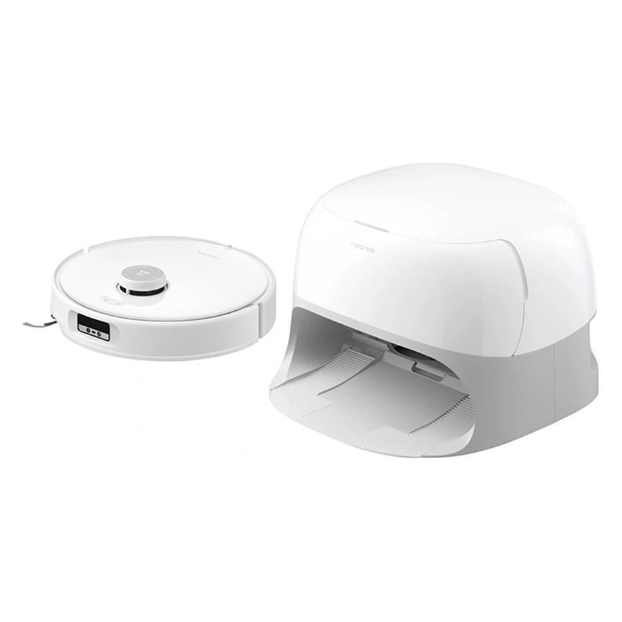
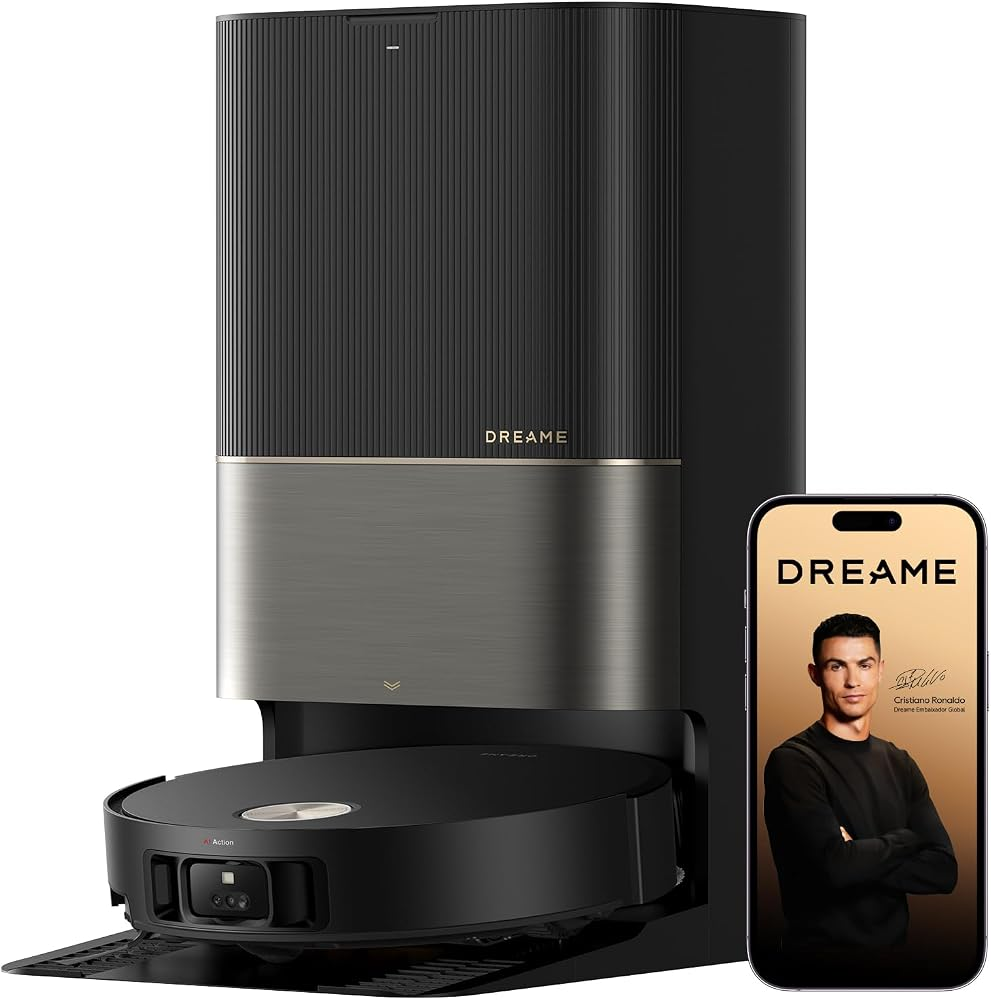
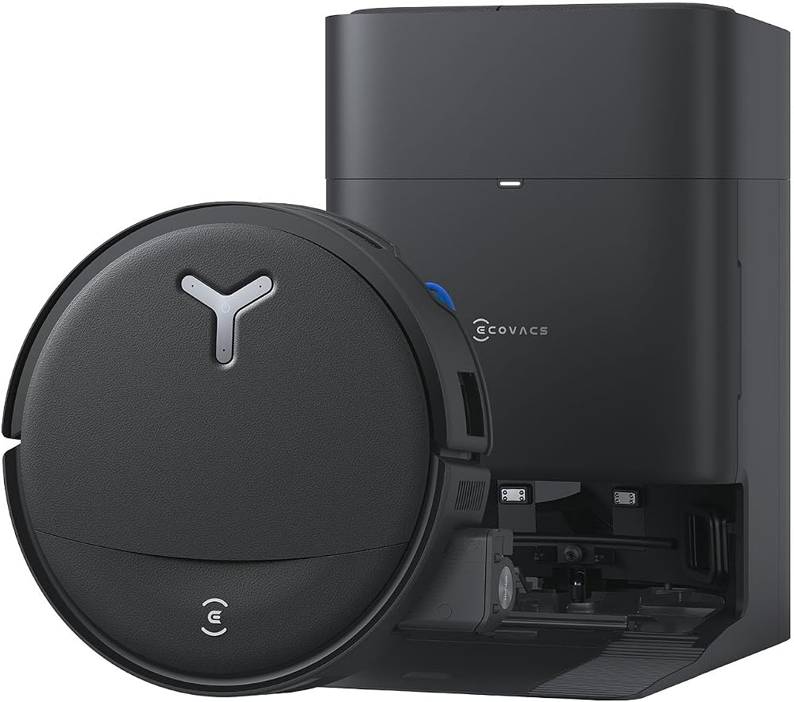

Робот-пылесос из Алматы, Белграда или Стамбула — в Рио
Какой робот с полной станцией выгоднее всего привезти, сколько стоят те же модели в Казахстане, Сербии и Турции против Бразилии, что будет с европейской станцией в бразильской розетке и как довезти коробку на 20 кг без пошлины. Продолжение подборки по Бразилии.
220–240 Внапряжение станций из всех трёх стран, робот при этом одинаковый
127 / 220 Вв Рио: обычная розетка и линия между двумя фазами
до −58%разница с ценой той же модели в Бразилии
US$ 1 000можно ввезти в багаже без пошлины раз в 30 дней
1
Что брать
Только роботы с полной станцией: она моет и сушит мопы и сама вытряхивает пыль из робота. Цена — сколько выйдет в Рио: магазин, возврат НДС в Казахстане и пошлина, если покупка дороже квоты. Станцию включаем в розетку 220 В.

Лучший вариант
Roborock Qrevo Curv
Для квартиры с порогами 2–2,5 см это лучший баланс. Подъёмное шасси берёт 3 см, по тестам RTINGS он один из лучших на твёрдом полу и в отмывании пятен. В Алматы с возвратом НДС он на 43% дешевле, чем в Бразилии, и укладывается в квоту US$ 1 000.
Возврат НДС по Tax Free (гражданка Украины), минимум−$107
Пошлина: в пределах квоты US$ 1 000$0
Итого в Рио$862
В Бразилии$1 501
Почему он
Подъёмное шасси AdaptiLift: одиночный порог 3 см, двойной 4 см. RTINGS в тесте взял 3,8 см
RTINGS: на твёрдом полу и в отмывании пятен — одна из лучших моделей
Станция моет мопы водой 75 °C, сушит воздухом 45 °C и вытряхивает пыль в мешок
Чек $969 — в пределах квоты, пошлины нет
Щётки, мопы и мешки под Qrevo Curv продаются на Amazon.com.br
Что учесть
Объезд препятствий слабый: провода и носки лучше убирать с пола (RTINGS)
Порог 3 см берёт не всегда: у robotobzor — «с трудом», 4 см в их тесте не взял
Продаётся только в Sulpak. Участвует ли Sulpak в Tax Free, спросите на кассе; без возврата — $969
Покупку оформляет и вывозит гражданка Украины по своему паспорту
Гарантии в Бразилии не будет, станция — только в розетку 220 В
Максимум по уборке и порогам · Стамбул

Dreame X50 Ultra Complete
Пороги 4,2 см, двойные 6 см. Vacuum Wars поставил его 3-м в своём топ-20, TechRadar — 4,5 из 5. Чек на $78 выше квоты, отсюда небольшая пошлина. Продаёт сторонний продавец на площадке MediaMarkt.
Высота 7,98 см, пороги 3 см и двойные 4 см, мойка 80 °C. Vacuum Wars на момент обзора ставил его 1-м. Минусы: короткая батарея (у Notebookcheck — 85 м² за заряд) и чек выше квоты.
Возврат НДС по Tax Free (гражданка Украины), минимум−$134
Пошлина 50% с $212 сверх квоты$106
Итого в Рио$1 184
Если порогов выше 2 см нет · Стамбул

Ecovacs Deebot T80S Omni
Лучшее мытьё в подборке: ролик промывается прямо на ходу, станция моет его водой 75 °C и сушит при 63 °C. Vacuum Wars — 3,87, объехал 21 препятствие из 24. Пороги только 2 см. В Бразилии — только импорт за $1 471.
Почему не другие. У Dreame L50s Pro Ultra одиночный порог всего 2,2 см. Aqua10 Ultra Roller Vacuum Wars убрал из своего топа из-за жалоб на протечки станции. У Xiaomi Robot Vacuum 6 нет ни одного независимого теста. Qrevo Curv 2 Flow берёт только 2 см и слабо отмывает пятна. MOVA E40 Ultra, Xiaomi H50 и H50 Pro моют мопы холодной водой.
2
Цены и характеристики
17 моделей с полной станцией. Нажмите на модель — откроются полные характеристики, оценки обзорщиков и известные проблемы. Цены взяты со страниц магазинов, где можно купить без местного аккаунта, и переведены в доллары. Бразилию считаю по Amazon.com.br: Mercado Livre без входа в аккаунт сейчас не открывается, поэтому его цены — из прошлой подборки, это отмечено в ячейке.
$1 501Mercado Livreцена из прошлой подборки: ML без входа в аккаунт сейчас не открывается
−43%$639
−43%$639
Уборка
Всасывание
18 500 Па (HyperForce, Max+)
Навигация и объезд
Лидар PreciSense LDS, НЕ выдвижной (башня сверху); объезд Reactive AI: структурированный свет + RGB-камера, 62 типа объектов в 20 категориях; боковой — обычный датчик стены
Пороги
Одиночный порог до 3 см, двойной до 4 см — за счёт шасси AdaptiLift (3 независимо управляемых колеса, подъём всего шасси на 10 мм, подъём переднего колеса). Тесты: RTINGS — макс. 3,8 см; robotobzor — 2 см легко, 3 см с трудом, 4 см не взял
Высота
10,3 см (лидар фиксированный); габарит 352×347×103 мм; RTINGS: проходит под 10,5 см
Батарея
6400 мА·ч (14,4 В Li-ion); до 240 мин (тихий режим); зарядка ≈4 ч (инструкция)
Пылесборник
325 мл (офиц.; Vacuum Wars — 330 мл)
Бак робота
80 мл (встроенный, доливается станцией)
Мопы и щётки
Моп
Два вращающихся диска; 200 об/мин; прижим до 6 Н (сноска Roborock на странице Curv 2 Flow); 30 уровней подачи воды; подъём мопов 10 мм на ковре; правый моп выдвигается к краям (FlexiArm); на станции мопы НЕ снимаются
Щётки
Основная DuoDivide (две половины с зазором по центру, антизапутывание, сертификаты SGS/TÜV), поднимается при мытье; боковая FlexiArm Arc — выдвижная, антизапутывание
Станция
Опорожнение
Да, в одноразовый мешок 2,7 л (Vacuum Wars, robotobzor; у RTINGS в тексте 2,5 л); до 7 недель без опорожнения (офиц.)
Вода
Чистая вода 4 л / грязная 3,5 л (robotobzor, Notebookcheck; RTINGS пишет 3,25 л); автодозатора моющего нет. Есть версия с подключением к водопроводу и канализации: автодозатор 600 мл (Roborock US; RTINGS — 550 мл)
Мойка мопов
Горячая вода до 75 °C, три режима температуры; повторная мойка/домывание по датчику грязи
Сушка
Тёплый воздух до 45 °C; длительность настраивается в приложении (варианты в офиц. источниках не нашёл — н/д)
61,5 дБ (сбалансированный режим, офиц.); 55 дБ в тихом режиме только мытья (офиц.); Coolblue — макс. 69,85 дБ
Размеры станции
Офиц. 450×450×450 мм (одна и та же цифра у всех трёх моделей — похоже на шаблон); версия с водопроводом — 450×450×321 мм (RTINGS), высота 32,1 см (Roborock US). Масса: робот 3,90 кг, станция 8,88 кг (de.roborock.com)
Питание станции
EU (инструкция): станция EWFD26HRR, 220–240 В~, 50–60 Гц; ток 3 А при опорожнении, 5,7 А при мойке мопов горячей водой (≈1,3 кВт по расчёту 5,7 А × 230 В), 0,6 А при зарядке и сушке; выход 20 В 1,5 А. Номинальная мощность робота 66 Вт (данные Roborock)
Wi‑Fi и приложение
Только 2,4 ГГц; приложение Roborock; Matter, Alexa / Siri / Google Home; голосовой ассистент «Hello Rocky» (работает офлайн)
Оценки обзорщиков
RTINGS — Хорош для смешанных покрытий: на твёрдом полу и в мытье пятен — одна из лучших моделей, на коврах средне, объезд препятствий плохой
Vacuum Wars — 3,49 звезды из 5 (мытьё 2,78; объезд 2,6; навигация 3,58; для питомцев 4,25)
RobotObzor — Мощная станция с горячей мойкой и сушкой, отличное мытьё, но заявленные 4 см порога в тесте не взял
Известные проблемы
Объезд препятствий нестабилен: не всегда распознаёт провода и носки, может наехать на обувь и экскременты (RTINGS)
Плохо вычёсывает шерсть, глубоко забившуюся в ковёр (RTINGS)
Порог в 4 см на практике не взят, 3 см — с трудом (robotobzor); AdaptiLift ведёт себя непоследовательно, может застрять на лохматом ковре (RTINGS)
Пандус станции несъёмный и пачкается, фильтр лотка забивается волосами (robotobzor)
Европейская версия: 19 000 Па (пресс-релиз для ЕС; в сноске — значение зависит от региона). Глобальный пресс-релиз Roborock — 20 000 Па. На офиц. страницах EU-магазинов число не указано («HyperForce»), в офиц. таблице сравнения поле пустое. Vacuum Wars пишет 22 000 Па (US-данные). Замер Vacuum Wars: 0,58 кПа, поток 15 cfm
Навигация и объезд
StarSight Autonomous System 2.0: двухизлучательный твердотельный 3D ToF-«лидар» вместо башни LDS (выдвижной/торчащей башни нет), более 21 600 точек сенсора (QVGA ToF). Объезд: 3D ToF + RGB-камера + боковой VertiBeam (вертикальный лазер); 108 типов объектов, предметы от 2×2 см
Пороги
Одиночный порог до 3 см, двойной (двухступенчатый) до 4 см — за счёт шасси AdaptiLift (три колеса с независимым подъёмом, шасси поднимается на 10 мм). Тесты: Notebookcheck — одиночный 30 мм взят; Vacuum Wars — одиночный ~36 мм не взят
Высота
7,98 см (робот 350×353×79,8 мм)
Батарея
6400 мА·ч (14,4 В Li-ion); работа до 180 мин (офиц. таблица, тихий режим); зарядка ≈3 ч, быстрая — 2,5 ч. Notebookcheck: 85 м² за один заряд (около 2 ч 20 мин), вернулся на базу с 14 % заряда
Пылесборник
270 мл
Бак робота
69 мл
Мопы и щётки
Моп
Два вращающихся мопа (Dual Spinning), правый выдвигается к краям (FlexiArm). Подъём мопа: до 22 мм с поднятым шасси (global), 17 мм (страницы US/DE/FR), 15 мм (офиц. таблица сравнения); Vacuum Wars намерил 8 мм. Автоснятие мопов на станции перед пылесосом/коврами — да (включается в приложении). Обороты и прижим — н/д
Да, мешок 2,5 л (офиц. DE/FR), до 7 недель (DE/FR) / до 70 дней (global). Vacuum Wars указывает 2,7 л
Вода
Бак чистой воды 4 л (офиц. DE/FR); грязной — 3 л (Notebookcheck; офиц. число н/д). Автодозатор моющего средства — да, 590 мл. Версия с подключением к водопроводу и канализации (Refill & Drainage) — опционально, не во всех регионах
Мойка мопов
Мойка мопов водой до 80 °C
Сушка
Да, горячим воздухом: 55 °C (global, FR, офиц. таблица) / 60 °C (страница DE); время сушки 2 / 3 / 4 ч на выбор
Ещё
Самоочистка поддона горячей водой 80 °C, съёмные модули самоочистки и основание; детекция грязи с повторной мойкой и домыванием; автодолив тёплой воды в бак робота; зарядка за 2,5 ч и по ночному тарифу; голосовой ассистент «Hello Rocky»; 99,99 % удаления бактерий (TÜV)
Прочее
Шум
≤55 дБ в тихом режиме только мытья (офиц.); 65 дБ уровень шума (офиц. таблица сравнения). Notebookcheck: ~56 дБ стандарт, ~60 дБ макс. (на 1 м), станция ~70 дБ при опорожнении
Размеры станции
38,1 × 47,5 × 48,8 см (версия с водопроводом: 38,1 × 47,5 × 30 см)
Питание станции
EU-док EWFD28HRR (или EWFD29HRR): 220–240 В~, 50–60 Гц; ток 3 А (сбор пыли), 6 А (мойка горячей водой), 0,8 А (зарядка и сушка); выход 20 В DC 2,5 А. Мощность в Вт в инструкции не указана; расчёт пика: 6 А × 230 В ≈ 1,4 кВт. Rated Power робота 66 Вт (офиц. таблица). Для справки: US/LatAm-док EWFD28LRR — 120 В, 60 Гц, 6 / 12 / 1,4 А
Wi‑Fi и приложение
Только Wi-Fi 2,4 ГГц; приложение Roborock; Alexa, Siri Shortcuts, Google Home, Matter (через OTA), Apple Watch
Vacuum Wars — 3,62★ общий рейтинг (мытьё 2,9; объезд 3,67; навигация 3,23; для питомцев 4,46); на момент обзора — №1 в их рейтинге среди 100+ протестированных
Известные проблемы
Короткая автономность: 85 м² за один заряд (~2:20 ч), возврат на базу с 14 % — заметно меньше, чем у Saros 10 (Notebookcheck)
Без башни LiDAR навигация менее эффективна — «средняя» эффективность маршрута (Vacuum Wars); мелкие огрехи навигации (Notebookcheck)
Маленький пылесборник 270 мл (Vacuum Wars)
Засохшие пятна отмывает хуже вибромопа Saros 10, риск разводов чуть выше среднего; на коврах боковая щётка убирается — у края ковра остаётся грязь (Notebookcheck, Vacuum Wars)
Лидар VersaLift DToF, выдвижной (поднимается/опускается; при опущенном высота 89 мм). Объезд: по сайту — AI RGB + 3D structured light, до 200 типов объектов, LED-подсветка; по инструкции — 3D Dual-Line Laser Sensors + AI HD Camera + AI IR Camera + LED Auxiliary Light
Пороги
ProLeap (выдвижные ноги, ресурс 30 000 циклов): двойной порог до 6 см (зазор между ступенями >4 см), одиночный до 4,2 см. Замеры: Vacuum Wars — переехал 36-мм доску (первым из протестированных); RTINGS — макс. порог 3,8 см
Высота
8,9 см (лидар опущен) / 11,1 см (лидар поднят); корпус 35 × 35 см. RTINGS: минимальный проезжаемый просвет 9,5 см
Батарея
6 400 мА·ч; до 220 мин (тихий режим, пылесос+моп) и до 205 м² по данным Dreame; зарядка ~4,5 ч (инструкция), «на 30 % быстрее». Таблица ELKO (ee.dreametech.com) пишет 260 мин — расходится с глобальным сайтом. Замер TechRadar: в среднем 90 мин
Пылесборник
395 мл
Бак робота
80 мл (только таблица сравнения дистрибьютора ee.dreametech.com; на глобальном сайте н/д)
Мопы и щётки
Моп
Два вращающихся дисковых мопа; обороты н/д; прижим н/д; подъём мопа 10,5 мм на ковре; выдвижение MopExtend RoboSwing до 4 см; снятие/установка мопов на базе — да (режимы Vacuum Only / Mop after Vacuuming, ковры с длинным ворсом); 32 уровня подачи воды
Щётки
HyperStream Detangling DuoBrush — две основные щётки (щетинно-резиновая + TPU), антизапутывание 100 % по TÜV SÜD, волосы до 30 см; боковая щётка SideReach выдвижная и поднимаемая (TripleUp: боковая +10 мм, основная +5 мм при мытье)
Станция
Опорожнение
Да, автоопорожнение в мешок 3,2 л (до 100 дней); UV-лампа у входа мешка
Вода
Бак чистой 4,5 л / грязной 4,0 л; автодозатор моющего средства — да; автопополнение бака робота — да; комплект подключения к водопроводу/канализации — покупается отдельно
Мойка мопов
Мойка мопов горячей водой до 80 °C, 4 уровня температуры; встроенный ингибитор накипи
Сушка
Сушка горячим воздухом — да; температура 45 °C (только таблица ee.dreametech.com, на глобальном сайте н/д); время н/д; UV-лампа для мопов
≤72 дБА (таблица ee.dreametech.com); замер smartzone.de: 53/56/58/62 дБ(А) по режимам, станция при опорожнении 68 дБ(А), сушка 39 дБ(А)
Размеры станции
457 × 340 × 590 мм (оси на сайте не подписаны), 9,09 кг
Питание станции
Станция RCXE0105: 220–240 В, 50–60 Гц; 700 Вт при опорожнении, 1 160 Вт при мойке горячей водой, 87 Вт при зарядке и сушке; выход 20 В 2 А. Робот: 14,4 В, 75 Вт
Wi‑Fi и приложение
Только 2,4 ГГц (2400–2483,5 МГц), 5 ГГц не поддерживается (инструкция); приложение Dreamehome; Alexa / Google Home / Siri, Matter, Apple Watch
Оценки обзорщиков
TechRadar — Отличная уборка у краёв и почти полная автономность, но батарея садится быстро и объезд объектов временами неточный
Vacuum Wars — «Easily one of the best robot vacuums we've ever evaluated»: почти идеальный сбор мусора на твёрдом полу и коврах, 0 % намотки волос
RTINGS — «Fair choice» для дома с разными покрытиями: отличный объезд препятствий и док, но мелкий мусор у краёв и в углах, пятна — в несколько проходов
Известные проблемы
Батарея: TechRadar — в среднем 90 мин вместо заявленных; Vacuum Wars — автономность ниже прежних флагманов Dreame
Vacuum Wars (частые жалобы): ранние прошивки — кружение и пропажа карт; держится далеко от плинтусов; волосы скатываются в «сигары» и забивают вход у двойной щётки
Vacuum Wars: всасывание и воздушный поток на стенде — около среднего, слабый сбор из щелей на макс. мощности
RTINGS: оставляет мелкий мусор у краёв и в углах; засохшие пятна отмывает только за несколько проходов
Лидар RetractSense LDS, ВЫДВИЖНОЙ: прячется под мебелью, сохраняя обзор назад на 100°; верхний дальномер и контактный датчик сверху. Объезд Reactive AI: структурированный свет + RGB-камера, более 200 типов объектов; боковой лазер VertiBeam
Пороги
Двойной порог до 4 см (офиц.); одиночный в офиц. источниках не указан (Notebookcheck: «4 см (3 + 1 см)»). Механизм: шасси AdaptiLift, на коврах с ворсом до 3 см поднимается на 20 мм
Высота
7,98 см с убранным лидаром (габарит 350×352×79,8 мм); высота с поднятым лидаром — н/д
Батарея
6400 мА·ч (14,4 В Li-ion); до 290 мин (тихий режим); зарядка ≈4 ч (Notebookcheck), 3–4 ч (TechRadar)
Пылесборник
245 мл (офиц.)
Бак робота
67 мл; станция доливает тёплую воду
Мопы и щётки
Моп
Два вращающихся диска; 200 об/мин; прижим до 12 Н; подъём мопов 15 мм (данные сравнения) / до 20 мм (FAQ de.roborock.com); моп выдвигается к краям (FlexiArm); мопы автоматически снимаются на станции перед уборкой ковров и в режиме «только пылесос»; моет тёплой водой (по FAQ — до 60 °C)
Щётки
Основная DuoDivide (антизапутывание: 0 % наматывания волос до 40 см, SGS), поднимается в режиме мытья; боковая FlexiArm Arc — выдвижная, антизапутывание
Станция
Опорожнение
Да, мешок 2,7 л (TechRadar); до 65 дней без опорожнения (офиц.); мешок подсушивается потоком воздуха (офиц.)
Вода
Чистая 4 л / грязная 3 л (Notebookcheck; TechRadar пишет 3,2 л / 3 л; официальных объёмов не нашёл); автодозатора моющего нет (Notebookcheck, данные сравнения Roborock)
Мойка мопов
Горячая вода до 100 °C (замер TÜV Rheinland); новый цельный лоток с режимом замачивания; повторная мойка/домывание по датчику грязи
Сушка
Тёплый воздух до 55 °C (офиц.; TechRadar указывает 50 °C); сушит мопы и основание; длительность — н/д (Notebookcheck: «несколько часов»)
Ещё
Самоочистка основания горячей водой до 100 °C; съёмное основание; автодолив тёплой воды в робот; автоматическое снятие мопов
Офиц. 450×450×450 мм — сомнительно: заявленная коробка 561×388×433 мм не вмещает куб со стороной 450 мм; реальные размеры — н/д. Масса робота со станцией 14,4 кг, коробки 17,5 кг
Питание станции
EU (инструкция): станция EWFD49HRR, 220–240 В~, 50–60 Гц; 3 А при опорожнении, 5,7 А при мойке горячей водой (≈1,3 кВт по расчёту 5,7 А × 230 В), 0,6 А при зарядке и сушке; выход 20 В 1,5 А. Номинальная мощность робота 60 Вт (данные Roborock). Ожидание с полной батареей — 3,5 Вт (Notebookcheck)
Wi‑Fi и приложение
Только 2,4 ГГц (802.11b/g/n) + BLE 4.1; приложение Roborock; Matter (обещан через OTA), Alexa / Siri Shortcuts / Google Home; «Hello Rocky» офлайн
Оценки обзорщиков
TechRadar — 4 из 5: отлично работает на коврах, неплохо моет, объезд мелких предметов средний
Notebookcheck — «Полезные улучшения»: в целом хорошее впечатление, сильная уборка ковров, мытьё уступает моделям с роликом (без числовой оценки)
Известные проблемы
Не видит мелкие препятствия: наезжал на клеммники; шнурок намотался на основную щётку, робот встал с ошибкой (Notebookcheck); дважды переехал игрушку высотой 2,5 см (TechRadar)
Нет автодозатора моющего средства (Notebookcheck)
Вращающиеся мопы размазывают крупные пролитые жидкости и оставляют липкие разводы (TechRadar)
LDS (лидар); в официальных данных и инструкции утапливание лидара не упоминается (во вступлении RTINGS сказано обратное, офданные этого не подтверждают). Объезд препятствий: Intelligent RGB (AI HD-камера + AI ИК-камера) + 3D структурированный свет (3D Dual-Line Laser), LED-подсветка, распознаёт 180+ типов предметов.
Пороги
Двойной порог/ступенька до 6 см (при расстоянии между ступенями больше 4 см), одиночная вертикальная ступень до 4,2 см. Переезжает за счёт ProLeap: выдвижные «ноги» (clearance legs) приподнимают корпус, ресурс 30 000 циклов. Два режима: одновременный подъём ног (пороги) и поочерёдный (рельсы раздвижных дверей). RTINGS в тесте намерил максимум 3,8 см.
Высота
9,7 см (348×352×97 мм), вес 4,44 кг; под мебелью высотой 9,5 см проходит (замер RTINGS)
Батарея
6400 мА·ч по офстранице (в инструкции: батарея R2416-4S2P, номинал 5,8 А·ч, 14,4 В); до 200 мин в тихом режиме (только уборка пылесосом), до 186 м²; зарядка ~4,5 ч (на 30 % быстрее по заявлению Dreame). Euronics: до 3,8 ч. RTINGS: около 5 ч в Quiet, чуть больше 3 ч на Max.
Пылесборник
395 мл (RTINGS: реальная вместимость заметно меньше)
Бак робота
80 мл (0,08 л — Euronics LV); станция доливает его автоматически
Мопы и щётки
Моп
2 вращающихся мопа (DuoScrub); обороты и прижим не опубликованы — н/д. Подъём мопов 10,5 мм. MopExtend RoboSwing выдвигает моп к краям и под мебель, до 4 см (Euronics LV). Мопы снимает автоматически на станции: в режиме «только пылесос» и на коврах с длинным ворсом, ставит обратно перед мытьём (инструкция). TripleUp: во время мытья поднимаются основная и боковая щётки.
Щётки
Основная щётка: HyperStream Detangling DuoBrush, два валика (резиновый с щетиной и TPU-резиновый), против наматывания волос до 30 см; поднимается примерно на 10 мм (Euronics). Боковая щётка выдвижная и поднимаемая, подъём больше 10 мм. RTINGS: чтобы снять боковую щётку, нужна отвёртка.
Станция
Опорожнение
Да, в мешок 3,2 л, до 100 дней без вмешательства
Вода
Чистая вода 4,5 л / грязная 4,0 л. Автодозатор моющего средства: да. Комплект подключения к водопроводу и канализации продаётся отдельно.
Мойка мопов
Горячая вода до 75 °C, 4 режима температуры. Есть «реактивная» перемывка: датчик цвета оценивает грязную воду и подбирает объём из 32 уровней.
Сушка
Да, горячим воздухом. Температура и время сушки официально не опубликованы — н/д.
Ещё
Самоочистка поддона AceClean DryBoard: 20 форсунок с водой 75 °C, поддон после мойки сушится. Ингибитор накипи в комплекте. Рампа-удлинитель. Сжатие волос в станции (Hair Compression, RTINGS).
Прочее
Шум
70 дБ (Euronics LV). Сертификат TÜV Low Noise (gsmonline.pl). RTINGS: «очень тихий», но цифры у них за пейволом.
Размеры станции
45,7 × 34,0 × 58,9 см (457×340×589 мм), вес 9,2 кг
Питание станции
Станция RCLE0101-2: вход 220–240 В, 50–60 Гц; выход 20 В, 2 А. Мощность: при опорожнении 700 Вт, при мойке горячей водой 1160 Вт, при зарядке и сушке 87 Вт. Ожидание ≤0,5 Вт, сетевое ожидание ≤2 Вт. Робот: 14,4 В, 75 Вт.
Wi‑Fi и приложение
Только 2,4 ГГц (2400–2483,5 МГц), 5 ГГц не поддерживается. Приложение Dreamehome. Alexa, Siri, Google Home, Apple Watch. Matter обещан обновлением по воздуху (OTA).
Оценки обзорщиков
RTINGS — Тестировали европейский экземпляр (ссылки на Amazon.de). Для дома с разными покрытиями ниже среднего: слабее всего собирает мусор с твёрдых полов, на коврах и с шерстью — посредственно. Зато отлично объезжает препятствия, избегает экскрементов питомцев, переезжает пороги и работает тихо.
Vacuum Wars — Хорош для домов с питомцами, мытьё оценено низко. Airflow 17 CFM, 1129 кв. футов на одном заряде.
Известные проблемы
issue: Слабо собирает мусор на твёрдых полах: разбрасывает и тащит его за собой, плохо вычищает углы и плинтусы. На Max+ лучше не становится.; source: RTINGS
issue: На коврах оставляет заметное количество шерсти. Цепляется за бахрому ковров и кисточки, натыкается на зеркала.; source: RTINGS
issue: Маленький пылесборник, высокие расходы на расходники, медленная зарядка. Боковую щётку без отвёртки не снять.; source: RTINGS
issue: Низкая оценка мытья: 2,7 из 5.; source: Vacuum Wars
Лидар VersaLift LDS, выдвижной (360°). Объезд: OmniSight 2.0 / AstroVision — две AI HD-камеры (бинокулярные, 160°) + боковой 3D structured light (StereoEdge, видит препятствия с 10 см) + LED-подсветка; 240+ типов объектов, точность до 1 мм (данные Dreame). В инструкции: Active Binocular Obstacle Avoidance Sensor + Dot Projector + LED Auxiliary Light
Пороги
Обновлённая ProLeap (выдвижные ноги) + трёхколёсное шасси AgiLift: двойной порог до 8 см (нижняя ступень шире 8 см), одиночный до 4,2 см, U-образные ножки стульев до 3 см. Замеры: RTINGS — макс. порог 3,8 см; Notebookcheck — переезд срабатывал не всегда
Высота
9,75 см (лидар опущен) / 12,0 см (лидар поднят), 35 × 35 см — по de.dreametech.com. На ee.dreametech.com в таблице 89,5 / 111,5 мм — расходится с DE-страницей и замером Notebookcheck (9,75 см). По FAQ Dreame (US): в режиме Safe Coverage заезжает в проёмы 113–140 мм, в Extreme — 98–140 мм. RTINGS: «None Cleared» на их минимальной высоте
Батарея
6 400 мА·ч (номинал в инструкции — 5,8 А·ч); до 175 мин (таблица ee.dreametech.com, на DE-странице время не указано); зарядка ~4,5 ч (инструкция). Notebookcheck: после 50 м² (пылесос+мытьё) оставалось ~45 %, зарядка ~4 ч
Пылесборник
220 мл
Бак робота
100 мл чистой / 140 мл грязной воды (бачки в роботе, вода в ролике обновляется на ходу)
Мопы и щётки
Моп
Роликовый моп AquaRoll длиной 260 мм (в сноске 258 мм); 100 об/мин (ee.dreametech.com); прижим 9–11 Н; 12 форсунок, 32 уровня влажности; FluffRoll — встречный ворсовальный валик 1000 об/мин; подъём ролика на ковре 14 мм + шторка AutoSeal закрывает ролик; выдвижение к краю — каретка смещается на 40 мм вправо; снятие мопа на базе — нет (Notebookcheck: «extendable/liftable/removable — yes/yes/no»)
Щётки
HyperStream Detangling DuoBrush — две основные щётки (щетинно-резиновая + TPU), волосы до 30 см без намотки (TÜV SÜD); боковая SideReach — выдвижная и поднимаемая (+10 мм при мытье; основная +5 мм)
Станция
Опорожнение
Да, мешок 3,2 л (до 100 дней), сушка мешка горячим воздухом 50 °C
Вода
Бак чистой 4,0 л / грязной 3,5 л; автодозатор — да, два отсека (моющее средство + средство от запаха животных); автопополнение бачка робота — да; комплект подключения к воде RAW8 — отдельно
Мойка мопов
ThermoHub: мойка ролика водой до 100 °C (нагрев PTC в поддоне), затем охлаждение; контроль загрязнения воды при мойке с повторным циклом
Сушка
Да: горячий воздух 70 °C + контактные нагреватели 60 °C, ролик вращается на 360°; время н/д
Ещё
Самоочистка поддона (auto washboard по таблице ee.dreametech.com); детекция грязи с повторной мойкой/повторным мытьём пола; голос «OK, Dreame», Alexa/Google/Siri; Matter (по DE-странице — через будущее OTA-обновление)
Прочее
Шум
≤74 дБА (таблица ee.dreametech.com); на DE-странице только «TÜV-знак низкого шума», без цифры
Размеры станции
42,0 × 44,0 × 50,5 см, 11,1 кг (de.dreametech.com; таблица ee — 420 × 441 × 505 мм). Спецблок ee.dreametech.com пишет 457 × 340 × 590 мм / 9 кг — это размеры станции X50, вероятно ошибка копирования
Питание станции
Станция RCHE0401: 220–240 В, 50–60 Гц; 650 Вт при опорожнении, 410 Вт при мойке горячей водой, 112 Вт при зарядке и сушке; выход 20 В 3 А. Робот RLH71DE: 14,4 В, 75 Вт (инструкция RLH71DE, редакция EN/AR/ZH-HK с ee.dreametech.com)
Wi‑Fi и приложение
Только 2,4 ГГц (2400–2483,5 МГц) по инструкции; приложение Dreamehome
Оценки обзорщиков
RTINGS — Хороший выбор для разных покрытий, но лучше всего на твёрдом полу: почти всё собирает с гладких поверхностей, на коврах и с шерстью слабее
Notebookcheck — Первый роликовый моп Dreame сразу удался: моет лучше вращающихся мопов, шторка для ковров полезна; в целом хорошо, но не идеально
Vacuum Wars — По их тестам — претендент на топ-5, но убран из рейтинга из-за жалоб покупателей на протечки воды из станции
Известные проблемы
Vacuum Wars: жалобы покупателей на Amazon на протечку воды из станции (в районе узла ролика); в их лаборатории не воспроизвелось, Dreame расследует
Батарея и скорость: Notebookcheck — 50 м² съедают ~55 % заряда, ~15 кВт·ч в месяц; Vacuum Wars — 0,62 м²/мин и 684 фут² (~64 м²) на заряд против ~1 100 фут² в среднем
Vacuum Wars: в 2 из 3 тестов длинные волосы застревали на входе; пылесборник маленький, 220 мл
RTINGS: не всегда объезжает экскременты, на коврах оставляет шерсть; Notebookcheck: шторка AutoSeal иногда не закрывалась на ковре, шнурок и низкий брусок не распознаны
—в Бразилии продаётся только 6 MAX — другая модель
—
—
Уборка
Всасывание
30 000 Па (замер на вентиляторе при внешнем питании — сноска mi.com)
Навигация и объезд
Официально: AI-камера, распознаёт 220+ типов препятствий (по умолчанию распознавание выключено, включается в приложении). LDS-башни нет — корпус постоянно 9 см (china-gadgets, smarthomeassistent). Тип картографирования на mi.com не назван; MediaMarkt PL пишет «навигация лазерная: да», svetandroida.cz (утечка до релиза) — «D-ToF LDS». То есть встроенный лидар возможен, но официально не подтверждён. Ультразвуковой датчик ковра.
Пороги
До 4 см: AI-камера видит препятствие, робот выдвигает две механические «ножки» и приподнимает корпус. Двойные пороги официально не описаны — н/д.
Высота
9,0 см (Φ35 см; замер с бампером, без выдвижной башни)
Батарея
4800 мА·ч (rated) / 5200 мА·ч (номинал). Время работы официально н/д; MediaMarkt PL: до 100 мин, зарядка 4 ч.
Бак робота
н/д (у робота роликовый моп с подачей чистой воды и скребком для грязной; объёмы баков робота не опубликованы)
Мопы и щётки
Моп
Роликовый моп с постоянным прижимом и постоянной влажностью, 220±10 об/мин, встроенный скребок, 3 уровня подачи воды; прижим в Па не указан. На ковре поднимается на 1 см. Ролик выдвигается к краям («двойное выдвижение»: ролик + боковая щётка). Отстёгивания мопа на базе нет (не заявлено).
Щётки
Основная — двухлезвийная, срезает волосы на ходу (в комплекте «automatic hair-cutting brush»). Боковая щётка с защитой от намотки, выдвижная. В комплекте 2 боковые щётки.
Станция
Опорожнение
Да, автоопорожнение в одноразовый мешок с запечатыванием, до 75 дней. Объём мешка 2,5 л — данные ритейлера thepromogroup.co.za, на mi.com не указан.
Вода
Чистая вода — 4 л (до 300 м²); грязная — н/д; автодозатор моющего средства — н/д (не заявлен)
Мойка мопов
Горячая вода до 80 °C (на финальном этапе мойки)
Сушка
Горячий воздух, сушка ~2 ч (99 % влаги за 2 ч, лабораторный тест Xiaomi); температура воздуха н/д
Ещё
Моющая пластина (washboard) входит в станцию; пандус; укладка кабеля сзади; блокировка от детей; OTA-обновления. Самоочистка поддона отдельно не заявлена.
Прочее
Размеры станции
34,7 × 28,8 × 55 см без пандуса; 34,7 × 47 × 55 см с пандусом
Питание станции
220–240 В ~ 50/60 Гц; выход 20 В 2 А; опорожнение 600 Вт; мойка горячей водой 1250 Вт; сушка горячим воздухом + зарядка 155 Вт
Wi‑Fi и приложение
Диапазон Wi-Fi официально н/д; приложение Xiaomi Home (Android 8.0+ / iOS 14.0+), Alexa и Google Assistant
Оценки обзорщиков
н/д — Независимых тестов базовой модели не найдено (тестируют только 6 Max, например spidersweb.pl). china-gadgets.de сомневается в навигации только по камере, без лидара
Известные проблемы
issue: Тип SLAM-навигации официально не раскрыт: LDS-башни нет, источники расходятся (камера или встроенный D-ToF); source: mi.com / china-gadgets.de / svetandroida.cz
issue: AI-распознавание препятствий по умолчанию выключено, его нужно включить в приложении; source: сноска 2 на mi.com
issue: Нет данных по пылесборнику, бакам робота, грязному баку станции и шуму; source: mi.com (не опубликовано)
Лидар LDS, НЕ выдвижной (фиксированная башня). Объезд: по инструкции — 3D Line Laser Sensor + AI HD Camera + AI IR Camera + LED-подсветка; Dreame — 220+ типов препятствий «с информацией о глубине»; в таблице ee.dreametech.com — «AI + 3D Structured Light»
Пороги
EasyLeap (основные + вспомогательные колёса для подъёма, без выдвижных ног): двойной порог до 4 см (ступени ~2,2 + 1,8 см, зазор между ними >3 см), одиночный до 2,2 см. На ee.dreametech.com в шапке написано «ProLeap» — расходится с глобальной и DE-страницами (EasyLeap)
Высота
10,38 см (35 × 35 × 10,38 см); лидар не убирается
Батарея
5 200 мА·ч (номинал в инструкции — 4,8 А·ч); зарядка ~3,5 ч (инструкция), «на 30 % быстрее»; время работы Dreame не публикует. Тесты: smartzone.de — расчётно 150 мин (45 м² за 48–50 мин = ~30 % заряда), Testsieger TV — 200 мин, inside digital — 30 мин на максимуме = 38 % заряда
Пылесборник
250 мл
Бак робота
80 мл (Testsieger TV; Dreame не указывает)
Мопы и щётки
Моп
Два вращающихся дисковых мопа Dual Omni-Scrub (наклоняются во все стороны под неровности пола); обороты н/д; прижим — только «повышенный прижим» для пятен, без цифры; подъём на ковре 10,5 мм (у Coolblue — 14 мм, расходится с Dreame); выдвижение MopExtend 40 мм; снятие мопов на базе — нет (в инструкции нет, smartzone.de: «мопы нельзя оставить в станции»)
Щётки
HyperStream Detangling DuoBrush — две основные щётки (щетинно-резиновая + TPU), подъём основной щётки — да; боковая с защитой от намотки (0 % по TÜV SÜD), выдвижная и поднимаемая
Станция
Опорожнение
Да, мешок 3,2 л (до 100 дней)
Вода
Бак чистой 4,5 л / грязной 4,0 л; автодозатор — да, один отсек; автопополнение бачка робота — да; комплект подключения к воде — отдельно
Мойка мопов
ThermoHub: мойка мопов водой до 100 °C (нагрев PTC в поддоне AceClean DryBoard), затем охлаждение
Сушка
Сушка горячим воздухом — да; температура и время н/д; UV нет (smartzone.de)
Dreame не публикует. Coolblue: макс. 75 дБ; Testsieger TV: макс. 68 дБ; замер smartzone.de: 52/58/60/62 дБ(А) по режимам, станция при опорожнении 68 дБ(А), сушка 39 дБ(А)
Размеры станции
457 × 340 × 590 мм, 9,21 кг (Coolblue: высота 59 см, ширина 45,7 см, глубина 34 см)
Питание станции
Станция RCLE0565: 220–240 В, 50–60 Гц; 700 Вт при опорожнении, 640 Вт при мойке горячей водой, 80 Вт при зарядке и сушке; выход 20 В 2 А. Робот RLL88HE: 14,4 В, 75 Вт
Wi‑Fi и приложение
Только 2,4 ГГц (2400–2483,5 МГц), 5 ГГц не поддерживается (инструкция); приложение Dreamehome
Оценки обзорщиков
smartzone.de — Те же навигация и качество уборки, что у флагмана X50, но без выдвижного лидара, снятия мопов, высоких порогов и UV; советуют брать при цене ниже 500 €
inside digital — Крепкий робот для твёрдого пола и плитки, но не для дома со множеством ковров и не для тех, кому важно мытьё
Testsieger TV — Проигрывает предшественнику L40s Pro Ultra, который лучше и дешевле
Известные проблемы
inside digital: слабо чистит ковры с высоким ворсом, длинные волосы наматываются на ковре; мытьё среднее — засохшие пятна в несколько проходов
Высокий корпус 10,38 см с невыдвижным лидаром не пролезает под низкую мебель (inside digital, smartzone.de)
inside digital: часто поздно замечает ножки стульев и столов; заметный расход батареи (38 % за 30 мин на максимуме)
smartzone.de: иногда моет края ковров; мопы нельзя снять и оставить в станции
Лидар PreciSense LDS, НЕ выдвижной; объезд Reactive AI: структурированный свет + RGB-камера, более 200 типов объектов, LED-подсветка; боковой — обычный датчик стены; распознавание типа грязи DirTect
Пороги
До 2 см (офиц.); шасси AdaptiLift нет. Тесты: RTINGS — 1,9 см; Vacuum Wars — «стандартные 20 мм». Перед ковром ролик поднимается на 15 мм и выдвигается защитный щиток Roller Shield
Высота
11,9 см (лидар фиксированный); габарит 353×353×119 мм; RTINGS: ни под одним тестовым препятствием по высоте не прошёл
Батарея
5200 мА·ч (14,4 В Li-ion; инструкция и офиц. сайт; у Notebookcheck ошибочно 6400); до 242 мин (тихий режим); зарядка с 15 % до 100 % ≈3 ч (FAQ de.roborock.com)
Пылесборник
324 мл (офиц.)
Бак робота
Чистая вода 102 мл; встроенный бак грязной воды ≈100 мл (не для луж больше 50 мл)
Мопы и щётки
Моп
Ролик SpiraFlow 270 мм с самоочисткой на ходу (8 точек подачи чистой воды, скребок сгоняет грязную в бак робота); 220 об/мин; прижим до 15 Н (в 2,5 раза больше, чем у Curv); подъём ролика на ковре 15 мм + щиток; ролик выдвигается к краям, остаётся зазор ≈10 мм; снятие на станции — нет (ролик)
Щётки
Основная DuoDivide (антизапутывание, 0 % в тесте Vacuum Wars), поднимается при влажных загрязнениях; две боковые Dual Lifting Arc — поднимаются, но НЕ выдвигаются
Станция
Опорожнение
Да, мешок 2,7 л (Vacuum Wars); до 65 дней без опорожнения (офиц.)
Вода
Чистая 4 л / грязная 3 л (Notebookcheck; официальных объёмов не нашёл); автодозатора моющего нет (Notebookcheck, Vacuum Wars, данные сравнения Roborock)
Мойка мопов
Горячая вода до 75 °C (на выходе нагревателя); лоток держит чистую и грязную воду раздельно, отмачивает и трёт ролик в обе стороны; повторная мойка/домывание по датчику грязи
Сушка
Тёплый воздух до 55 °C (офиц.); длительность настраивается в приложении (варианты — н/д)
Ещё
Самоочистки основания станции нет (данные сравнения Roborock, Notebookcheck); съёмное основание; автодолив бака робота; станция требует места 0,9 м в высоту × 0,46 м в ширину × 1,2 м в глубину (инструкция)
Прочее
Шум
63 дБ (сбалансированный режим, офиц.); FAQ Roborock: 62–65 дБ при уборке с мытьём, 56–57 дБ при мойке и сушке, ~70 дБ при опорожнении (меньше минуты); Notebookcheck: сушка ≈45 дБ на 1 м
Размеры станции
Офиц. 450×450×450 мм (та же цифра, что у двух других моделей — возможно шаблон). Масса робота со станцией 14,33 кг, коробка 561×499×517 мм / 17,19 кг (Roborock US)
Питание станции
EU (инструкция): станция EWFD53HRR, 220–240 В~, 50–60 Гц; 2 А при опорожнении (≈460 Вт по расчёту 2 А × 230 В), 0,69 А в остальных режимах; выход 20 В 1,5 А. Номинальная мощность робота 65 Вт (данные Roborock). Для сравнения, версия для США EWFD53LRR: 120 В, 60 Гц, 4 А / 1,25 А
Wi‑Fi и приложение
Только 2,4 ГГц (802.11b/g/n) + BLE 4.1; приложение Roborock; до 5 Wi‑Fi-профилей; Matter (обещан через OTA), Alexa / Siri Shortcuts / Google Home; «Hello Rocky» офлайн
Оценки обзорщиков
Vacuum Wars — 3,63 звезды из 5: сильный пылесос (87 % песка из ковра, 0 % наматывания), но по итогам мытья — 13,7 балла, одна из худших моделей
RTINGS — Приличный ежедневный робот для смешанных покрытий: хорош на твёрдом полу, слабее на коврах и с шерстью
Notebookcheck — «Ждали большего»: добротный, но мытьё ниже ожиданий (без числовой оценки)
Известные проблемы
Слабо отмывает засохшие пятна: 25 баллов при среднем 112, на максимальной подаче воды — 38 (Vacuum Wars); на чёрной плитке остаются разводы (Notebookcheck)
Объезд мелких и тёмных предметов ненадёжен: шнурок, клеммники, тёмные ножки стульев (Notebookcheck); не всегда объезжает экскременты (RTINGS)
Высокий корпус 11,9 см с невыдвижным лидаром, порог всего 2 см, боковые щётки не выдвигаются — мусор остаётся в углах (Notebookcheck, RTINGS, Vacuum Wars)
Нет самоочистки основания станции и автодозатора; сушка шумная — около 45 дБ (Notebookcheck)
LDS (лидар), не утапливается. Объезд препятствий: Intelligent RGB + 3D структурированный свет (3D Dual-Line Laser), AI HD-камера + AI ИК-камера, LED-подсветка; 120+ типов предметов. Ковры определяет ультразвуком.
Пороги
Официально н/д. 2,2 см (Dateks/Icecat). PC-Welt в тесте: пороги до 2 см переезжал без проблем. Механизма подъёма корпуса (как ProLeap) в инструкции нет.
Высота
9,7 см (350×350×97 мм), вес 4,0 кг. PC-Welt: под мебель высотой около 9 см заезжает.
Батарея
5200 мА·ч (инструкция: номинал 4,8 А·ч, типовая 5,2 А·ч, 74,88 Вт·ч, 14,4 В); до 180 мин при стандартном всасывании, 168 м² (офстраница FR); Dateks — 194 мин; зарядка ~3,5 ч. Замер LaboMaison: 115 мин в стандартном режиме.
Пылесборник
395 мл (офстраница; у Dateks указано 0,3 л)
Бак робота
Официально н/д. 80 мл по данным Galaxus, не подтверждено. Бак на роботе точно есть: по инструкции станция доливает его автоматически.
Мопы и щётки
Моп
2 вращающихся мопа; обороты и прижим не опубликованы — н/д. Подъём 10,5 мм. MopExtend: выдвигается один (правый) моп (PC-Welt), на сколько — н/д. Автоматически снимать мопы на станции по инструкции не умеет: в режиме «только пылесос» мопы поднимаются, а в режиме «только мытьё» их надо ставить вручную. PC-Welt пишет об автосбросе мопов, но инструкция этого не подтверждает.
Щётки
В комплекте две основные щётки: поднимаемая резиновая (стоит с завода) и TriCut 3.0 со встроенным лезвием, режет намотавшиеся волосы. Боковая щётка неподвижная, не выдвигается (Notebookcheck, PC-Welt, LaboMaison).
Станция
Опорожнение
Да, в мешок 3,2 л, до 100 дней
Вода
Чистая вода 4,5 л / грязная 4,0 л. Автодозатор моющего средства: да. Комплект подключения к водопроводу продаётся отдельно (199 € — PC-Welt).
Мойка мопов
Горячая вода 75 °C, 4 настраиваемых уровня (на FR-странице — «4 niveaux d'eau ajustables»). Перемывка по датчику загрязнения воды, объём из 32 уровней.
Сушка
Да, горячим воздухом. Длительность настраивается в приложении (PC-Welt). Температура и время не опубликованы — н/д.
Ещё
Самоочистка поддона 2.0. Рампа-удлинитель.
Прочее
Шум
74 дБ (Dateks, MediaMarkt AT). Замер LaboMaison: 56 дБ(A) на паркете и до 63 дБ(A) на ковре в режиме boost. PC-Welt: первая самоочистка станции относительно громкая.
Размеры станции
45,7 × 34 × 59 см (457×340×590 мм), вес 9,0 кг
Питание станции
Станция RCLE0405: вход 220–240 В, 50–60 Гц; выход 20 В, 2 А. Мощность: при опорожнении 700 Вт, при мойке горячей водой 1160 Вт, при зарядке и сушке 87 Вт. Ожидание ≤0,5 Вт. Робот: 14,4 В, 75 Вт.
Wi‑Fi и приложение
Только 2,4 ГГц (2400–2483,5 МГц). Приложение Dreamehome. Alexa, Siri, Google Home, Apple Watch.
Оценки обзорщиков
PC-Welt — Мощное всасывание и продуманная самоочистка, за 699 € однозначно рекомендуют. Главный минус — боковая щётка не выдвигается, поэтому хуже вычищает углы. Ковры можно было бы чистить лучше.
LaboMaison — Серьёзная альтернатива Mova P50 Pro Ultra и L40s Pro Ultra, один из лучших компромиссов дешевле 1000 €. С первого прохода собрал 97 % мусора на паркете и 95 % на ковре с длинным ворсом.
Известные проблемы
issue: Боковая щётка не выдвигается, поэтому углы и места у мебели вычищает хуже.; source: PC-Welt; LaboMaison
issue: На коврах, особенно у краёв и в углах, чистит слабее.; source: PC-Welt
issue: Мелкие проблемы с кабелями и очень низкими предметами. Приложение ещё нужно доработать. Самоочистка станции громкая.; source: PC-Welt
issue: Резиновую щётку приходится чаще чистить от шерсти. Автономности маловато для площадей больше 150 м².; source: LaboMaison
19 000 Па, мотор TurboForce 6 на 90 000 об/мин. Замер Vacuum Wars: 0,88 кПа и 18 CFM на максимуме — ниже среднего в классе.
Навигация и объезд
Неподвижная LDS-башня с подпружиненной крышкой + 3D line laser (однолинейный лазер) для объезда (EU-инструкция). Камеры нет. Датчики: край, падение, ультразвуковой датчик ковра.
Пороги
Одиночный порог до 22 мм (Marks Electrical, robotobzor); официально у MOVA не указан. Механизма подъёма корпуса нет.
Высота
9,7 см (35 × 35 × 9,7 см — inside-digital, neozone, instalki, robotobzor; у MOVA на сайте не указано)
Батарея
5200 мА·ч; до 260 мин в тихом режиме, до 220 м² (MOVA); зарядка ~3,5 ч (инструкция). Замер robotobzor: 113 мин на максимуме с мытьём.
Пылесборник
300 мл (Marks: 0,3 л; instalki, robotobzor)
Бак робота
80 мл (MOVA), автодолив от станции; 3 уровня подачи воды
Мопы и щётки
Моп
Две вращающиеся салфетки; обороты и прижим н/д. Подъём 10,5 мм на ковре (ультразвук; высота робота меняется на 22 мм). MaxiReach: одна салфетка выдвигается к плинтусу и под мебель на 4 см. Блок мопа снимается вручную; автоматического отстёгивания на базе нет.
Щётки
Основная — силиконовая (robotobzor); опционально CleanChop Brush 3.0 с тремя ножами для волос. Боковая щётка с резиновой полосой под 45° против намотки, не выдвижная (Vacuum Wars). Тест Vacuum Wars: на щётке осталось 44 % волос.
Станция
Опорожнение
Да, мешок 3,2 л, до 75 дней (MOVA)
Вода
Чистая 4,5 л / грязная 4 л. Под автодозатор есть зарезервированный слот, сам модуль продаётся отдельно (EU-инструкция).
Мойка мопов
Холодная вода: при мойке станция берёт 40 Вт (инструкция); robotobzor и Vacuum Wars подтверждают, что подогрева нет
Сушка
По MOVA — сушка горячим воздухом, температура не указана. robotobzor: заявлено 45 °C, намерили 52 °C. Vacuum Wars в тексте пишет «воздух комнатной температуры» и сам себе противоречит («Heated-Air Drying» в карточке). Мощность станции при сушке + зарядке 87 Вт — нагрев есть.
Ещё
Функция очистки основания моечной пластины (через приложение, с ручной помывкой); пандус-удлинитель; самоочистки поддона нет (Vacuum Wars). К водопроводу не подключается.
Прочее
Шум
52 дБ (Marks Electrical); 65 дБА (заголовок карточки MediaMarkt ES); замер robotobzor: 57–66,3 дБ в зависимости от режима
Размеры станции
34 × 45,7 × 59 см (robotobzor: 340 × 457 × 590 мм; instalki: высота 590 мм)
Питание станции
EU-станция RCEE2421: 220–240 В 50–60 Гц; выход 20 В 2 А; опорожнение 700 Вт; мойка 40 Вт; зарядка + сушка 87 Вт. Робот: 14,4 В, 75 Вт.
Wi‑Fi и приложение
Только 2,4 ГГц (2400–2483,5 МГц, по инструкции); приложение MOVAhome, Alexa и Google Assistant
Оценки обзорщиков
Vacuum Wars — 2,91 звезды, 41-е место в рейтинге; слабые объезд препятствий, мытьё и сбор шерсти, сильная чистка ковра (88 %)
LDS (лидар), не утапливается (Smart Pathfinder). Объезд препятствий 3DAdapt: однолинейный лазер (3D Line Laser Sensor, по инструкции). AI-камеры и LED на роботе по инструкции нет. FoneArena пишет про AI-камеру — это расходится с инструкцией. Ковры определяет ультразвуком.
Пороги
Около 2 см. В разделе неисправностей инструкции сказано, что порог выше примерно 2 см робот не переедет. FoneArena: 2 см; Onliner: 20 мм. Механизма подъёма корпуса в инструкции нет.
Высота
10,4 см (350×350×104 мм), вес 3,9 кг
Батарея
5200 мА·ч (инструкция: номинал 4,8 А·ч, типовая 5,2 А·ч, 74,88 Вт·ч, 14,4 В); до 260 мин в тихом режиме (офстраница SE; на индийской офстранице есть и 250 мин); зарядка ~3,5 ч. Официальный дистрибьютор в Литве: 180 мин.
Пылесборник
320 мл
Бак робота
На роботе бака нет или он официально не указан: в инструкции у робота нет порта автодолива, мопы моются на станции, робот возвращается туда по ходу уборки. У официального дистрибьютора в Литве в строке «бак робота» стоит прочерк. Onliner пишет про автодолив робота, но инструкция этого не подтверждает.
Мопы и щётки
Моп
2 вращающихся мопа DuoScrub с прижимом к полу (цифры прижима и обороты — н/д). Подъём 10,5 мм. Моп не выдвигается; к краям и в углы робот дотягивается, поворачивая корпус (RoboSwing). Автоматически снимать мопы не умеет: в режиме «только мытьё» их ставят вручную.
Щётки
Основная щётка: тип официально не указан, антизапутывание не заявлено. Боковая щётка одна, обычная, не выдвигается.
Станция
Опорожнение
Да, в мешок 3,2 л (DualBoost 2.0), до 100 дней
Вода
Чистая вода 4,5 л / грязная 4 л. Автодозатора моющего средства нет: в комплекте нет отсека для него, средство можно вручную добавить в бак чистой воды (инструкция).
Мойка мопов
Мойка без нагрева воды. Станция при мойке потребляет 40 Вт, нагревателя нет (инструкция). У официального дистрибьютора в Литве: «мойка горячей водой ×». Горячую воду в бак заливать запрещено.
Сушка
Да, тёплым или горячим воздухом (SE: «varmluftstorkning», IN: «warm air drying»). Температура и время — н/д.
Ещё
Самоочистка поддона полуавтоматическая: пользователь вынимает поддон, станция заливает и откачивает воду, дальше протирают вручную (инструкция). У официального дистрибьютора в Литве: «авточистка поддона ×». Рампа-удлинитель.
Прочее
Шум
≤75 дБ(A) по сравнительной таблице официального дистрибьютора Dreame в Литве. В той же таблице есть явная ошибка в типе мопа, поэтому за цифру не ручаюсь.
Размеры станции
34 × 45,7 × 59 см (340×457×590 мм), вес 8,3 кг
Питание станции
Станция RCDE0303: вход 220–240 В, 50–60 Гц; выход 20 В, 2 А. Мощность: при опорожнении 700 Вт, при мойке 40 Вт, при зарядке и сушке 87 Вт. Ожидание ≤0,5 Вт. Робот: 14,4 В, 75 Вт.
Wi‑Fi и приложение
Только 2,4 ГГц (2400–2483,5 МГц). Приложение Dreamehome. Alexa, Siri, Google Home.
Оценки обзорщиков
MySmartPrice (Индия) — Сильное всасывание, хорошая навигация и мытьё, достающее до углов. Минусы: долго убирает весь дом и плохо справляется с кабелями.
FoneArena (Индия) — Робот флагманского уровня: всасывание и станция того стоят, RoboSwing хорошо достаёт углы. Пишут про AI-камеру, что расходится с инструкцией.
Известные проблемы
issue: Убирает весь дом долго: часто возвращается на станцию за мойкой мопов и опорожнением. Трёхкомнатную квартиру убирал 2 ч 34 мин.; source: MySmartPrice
issue: Кабели наматываются на щётку и мопы, нужна помощь. Испортил оплётку зарядного кабеля MacBook. Большую скомканную бумагу объезжает, а не убирает.; source: MySmartPrice
issue: Станции нужно место по высоте, чтобы доставать баки. Мелкая пыль быстро забивает фильтр.; source: FoneArena
issue: Пороги выше ~2 см не переезжает (сказано в самой инструкции). Мопы моются без горячей воды.; source: Инструкция Dreame D20 Ultra (R9507)
18 500 Па (офиц. страницы DE/FR «Qrevo Edge S5A/5V1»; на глобальной странице серии — «зависит от региона»). touchit.sk пишет 17 000 Па
Навигация и объезд
LiDAR PreciSense (LDS-башня, невыдвижная); объезд Reactive Tech — структурированный свет, без RGB-камеры и без видео
Пороги
До 2 см (одиночный), подъёмного шасси нет (офиц. FAQ FR)
Высота
9,79–9,8 см (робот 352×352×97,9 мм)
Батарея
5200 мА·ч (14,4 В Li-ion); работа до 190 мин (офиц. таблица сравнения), android.com.pl — до 180 мин; площадь до 214 м²
Пылесборник
325 мл
Бак робота
72 мл
Мопы и щётки
Моп
Два вращающихся мопа; подъём на ковре до 10 мм; правый моп выдвигается к краям (FlexiArm); снятия мопов на станции нет (мопы остаются на роботе). Обороты и прижим для 5V1 — н/д (8 Н и 200 об/мин Roborock указывает только для EdgeT)
Щётки
Основная DuoDivide (антизапутывание, SGS 0 %); боковая FlexiArm Arc — антизапутывающая, выдвижная. По FAQ FR щётки не поднимаются (поднимаются только мопы); в офиц. таблице поле подъёма щётки = Liftable — противоречие
Станция
Опорожнение
Да, до 7 недель (DE/FR) / до 65 дней (global); мешок 2,7 л (android.com.pl; офиц. объём н/д)
Вода
Чистая 4 л / грязная 3,5 л (android.com.pl; touchit.sk — грязная 3,5 л; офиц. н/д). Автодозатора моющего средства нет
Мойка мопов
Мойка мопов водой до 75 °C, три режима температуры
Сушка
Да, тёплым воздухом 45 °C; длительность настраивается в приложении (конкретные значения н/д)
Ещё
Самоочистка поддона горячей водой (75 °C), детекция грязи с повторной мойкой и домыванием, автодолив бака робота, съёмное основание станции
Док EWFD30HRR (или EWFD31HRR): 220–240 В~, 50–60 Гц; ток 3 А (сбор пыли), 5,6 А (мойка горячей водой), 0,6 А (зарядка и сушка); выход 20 В DC 1,5 А. Мощность в Вт не указана; расчёт пика: 5,6 А × 230 В ≈ 1,3 кВт. Rated Power робота 66 Вт (офиц. таблица)
Wi‑Fi и приложение
Только Wi-Fi 2,4 ГГц; приложение Roborock; Alexa, Siri, Google Home, Matter (через OTA), Apple Watch; встроенного голосового ассистента нет
Оценки обзорщиков
android.com.pl — 8,9/10: сильное всасывание, щётки не путаются, хорошая уборка вдоль краёв, станция моет и сушит мопы
touchit.sk — «Качественный и надёжный робот», премиальные функции за меньшую цену (~730 €); но порог только 2 см и нет камеры
Известные проблемы
Нет автодозатора моющего средства (android.com.pl)
Нет камеры и видеосвязи, мелкие предметы вроде LEGO не замечает (android.com.pl)
Мопы не снимаются: при уборке ковров остаются на роботе, подъём только 10 мм (android.com.pl, офиц. данные)
Пороги только до 2 см, без подъёмного шасси (офиц. FAQ FR, touchit.sk)
24 800 Па (EU и US). Vacuum Wars оценивает тягу как отличную.
Навигация и объезд
Встроенный лазерный дальномер без башни (Ecovacs: «embedded radar», в таблице — «Mini-ToF»; инструкция: Laser Ranging, дальность 10 м; Vacuum Wars: embedded LiDAR). Объезд: AIVI 3D 3.0 — структурированный свет + RGB AI-камера с подсветкой и VLM-моделью; ИК-датчик препятствий (0,3 м), ультразвук 300 кГц для ковров.
Пороги
Одиночный порог до 20 мм, за счёт цепких колёс и особой стратегии проезда; механизма подъёма корпуса нет. Vacuum Wars: 19 мм взял. CyberShack: пороги 3 см надёжно не берёт.
Высота
9,8 см (353 × 351 × 98 мм)
Батарея
6400 мА·ч (таблицы Ecovacs US/AU); в EU-инструкции: батарея до 4 ячеек, 14,4 В, rated 5800 мА·ч. Работа: 236 мин в тихом режиме «пылесос + моп», 187 мин в стандартном (Ecovacs AU); зарядка 3,5 ч.
Пылесборник
220 мл (0,22 л)
Бак робота
110 мл, автодолив от станции (US: горячей водой)
Мопы и щётки
Моп
Ролик OZMO ROLLER 2.0: прижим 3800 Па, 220 об/мин, Ø175 мм, отмывается прямо во время уборки. Подача воды — 50 уровней. На ковре ролик поднимается (Triple Lift), высота подъёма н/д: у T80 — 10 мм, у T80S не указана. TruEdge 3.0 выдвигает ролик на 1,5 см к краям, на пневмоподвеске. Ролик снимается вручную, автоматического отстёгивания на базе нет.
Щётки
ZeroTangle 3.0: основная щётка Cyclone-directed с анти-намоткой и спиральная боковая щётка с анти-намоткой. Боковая щётка не выдвижная («fixed» / «starre»), но поднимается над крупным мусором; при разливах поднимаются обе щётки (Triple Lift).
Станция
Опорожнение
Да, мешок 3 л. Ecovacs US: «до 90 дней»; наличие мешка определяется программно.
Вода
Чистая 4 л / грязная 2,2 л (до 400 м²). Автодозатора нет: средство добавляется вручную в чистый бак, 1:200, около 20 мл на 4 л (EU-инструкция). В таблице US есть пункт «Solid Cleaner compartment: Yes».
Мойка мопов
Горячая вода до 75 °C с замачиванием (ролик погружается в плавающий лоток)
Сушка
Горячий воздух 63 °C с прокручиванием ролика; 2 ч по умолчанию, можно 3 или 4 ч
Ещё
Моечный лоток без обслуживания до 150 дней (разбирать 1–2 раза в год), лоток съёмный. В таблице US: самоочистка станции скребком — Yes; в таблице AU: «Station actively self-cleaning: No» — расхождение. Есть поддон-каплесборник.
$689Amazon.com.brверсия EU, то есть тоже 220 В; продавец rafa peças. Версия 127 В на ML — $802 в прошлой подборке
−39%$269
−26%$180
−39%$269
+23%
Уборка
Всасывание
15 000 Па (4 режима: Silent / Standard / Strong / Turbo)
Навигация и объезд
LDS-лидар 360° на верхней башне; для объезда — широкоугольный (129°) структурированный свет / однолинейный лазер + бампер; датчик кромки, датчики падения, ультразвуковой датчик ковра. Камеры нет (presse-citron).
Пороги
Одиночный порог до 20 мм (FAQ Xiaomi), механизма подъёма корпуса нет. В тесте presse-citron робот не взял ступеньку 2 см.
Высота
9,3 см (355 × 353,5 × 93 мм)
Батарея
4800 мА·ч (rated) / 5200 мА·ч (номинал); до 120 мин в стандартном режиме «пылесос + моп» (FAQ Xiaomi); зарядка 3–6 ч. MediaMarkt PL: 150 мин.
Пылесборник
280 мл (FAQ Xiaomi)
Бак робота
н/д (у робота небольшой бак с автодоливом от станции; объём не опубликован)
Мопы и щётки
Моп
Две вращающиеся салфетки, 180 об/мин; прижим н/д. Подъём 10 мм: на ковре, при возврате на мойку и при сушке. Вылет руки мопа к краям увеличен на 68 % (до 0 мм от стены; заезжает под мебель с зазором от 2,8 см). Отстёгивания мопов на базе нет.
Щётки
Основная щётка с Y-образными зубцами-гребнем, анти-намотка на обоих концах, съёмная крышка-гребень; волосы не срезает (presse-citron). Боковая щётка спиральная двухлучевая с анти-намоткой, выдвижная: выдвигается во внутренних углах.
Станция
Опорожнение
Да, одноразовый мешок, до 75 дней (официально). Объём мешка: 2,5 л по presse-citron; MediaMarkt PL пишет то 3 л, то 2,5 л. У H50 официально 2,5 л.
Вода
Чистая 4 л / грязная 4 л (FAQ Xiaomi); до 240 м²; полного бака хватает на 32 мойки мопов. Автодозатора нет (не заявлен).
Мойка мопов
Подогрев воды не заявлен. Станция берёт 15 Вт при мойке, так что моет холодной водой — это вывод из мощности. Моет высокоскоростным вращением о самоочищающуюся пластину.
Сушка
Горячий воздух, по умолчанию 2 ч (можно 2/3/4 ч); температура н/д
Ещё
Пластина самоочищается вращением мопов, грязь смывается в бак; фильтр грязной воды; ручная функция «Station's assisted washing» (станция наливает и откачивает воду). Отдельный слив грязной воды.
Прочее
Шум
57 дБ(A) в режиме только мытья (mi.com); 57 дБ (homeandsmart); MediaMarkt PL: звуковая мощность 72 дБ(A)
Размеры станции
32 × 41,1 × 49,5 см
Питание станции
220–240 В ~ 50/60 Гц; выход 20 В 1 А; сбор пыли 440 Вт; мойка 15 Вт; сушка + зарядка 86 Вт
Wi‑Fi и приложение
Только 2,4 ГГц (FAQ Xiaomi); приложение Xiaomi Home, Alexa и Google Assistant
Оценки обзорщиков
Presse-citron — 8/10 — продуманный и недорогой робот
$543Amazon.com.brверсия US (120 В), продавец PACMAGAZZINE. Версия 127 В на ML — $630 в прошлой подборке
−41%$224
−31%$170
−41%$224
−6%$34
Уборка
Всасывание
10 000 Па (4 режима)
Навигация и объезд
LDS-лидар 360°; объезд только механическим бампером/кожухом лидара (FAQ Xiaomi). Ни структурированного света, ни камеры нет.
Пороги
Одиночный порог до 20 мм (mi.com), механизма подъёма нет
Высота
9,3 см (355 × 353,5 × 93 мм)
Батарея
4800 мА·ч (rated) / 5200 мА·ч (номинал); более 120 мин в стандартном режиме «пылесос + моп» (FAQ Xiaomi); зарядка 3–6 ч. MediaMarkt PL: 150 мин.
Пылесборник
280+ мл (FAQ Xiaomi)
Бак робота
н/д (у робота бак с автодоливом от станции, объём не указан)
Мопы и щётки
Моп
Две вращающиеся салфетки, 180 об/мин, 3 уровня подачи воды; прижим н/д. Подъём 10 мм на коврах, если зоны ковров заданы в приложении (mi.com). Мопы к краям не выдвигаются (notebookcheck). Отстёгивания на базе нет.
Щётки
Основная щётка с Y-образным гребнем против намотки. Боковая щётка спиральная двухлучевая с анти-намоткой, не выдвижная.
Станция
Опорожнение
Да, одноразовый мешок 2,5 л, до 75 дней (FAQ Xiaomi)
Вода
Чистая 4 л / грязная 3,2 л (FAQ Xiaomi; на обзорной странице mi.com написано «4 л чистая и грязная» — расхождение). Автодозатора нет: в чистый бак можно лить только воду, без средства (FAQ).
Мойка мопов
Холодная вода: подогрев не заявлен, станция берёт 15 Вт при мойке. Сначала замачивание, потом высокоскоростная отмывка о пластину.
Сушка
Сушка воздухом без нагрева (FAQ: «secado al aire»; 23 Вт при сушке + зарядке). Время 2–12 ч, по умолчанию 4 ч.
Ещё
Пластина погружного типа самоочищается вращением мопов; съёмный фильтр грязной воды; ручная функция помощи при промывке станции; баки снимаются движением вверх
Прочее
Шум
н/д официально; MediaMarkt PL: звуковая мощность 72 дБ(A)
Размеры станции
32,8 × 41,55 × 50,75 см
Питание станции
220–240 В ~ 50/60 Гц; выход 20 В 0,9 А; сбор пыли 440 Вт; мойка 15 Вт; сушка воздухом + зарядка 23 Вт
Wi‑Fi и приложение
Только 2,4 ГГц (FAQ Xiaomi); приложение Xiaomi Home, Alexa и Google Assistant
10 000 Па (офиц. страницы ae-en/my: IEC 62885-2, режим Max+, «может отличаться по регионам»). Чешские источники (svetandroida.cz) пишут 8 000 Па
Навигация и объезд
LiDAR PreciSense (LDS-башня, невыдвижная), 360°; объезд Reactive Tech — структурированный свет, камеры нет; карты до 4 этажей
Пороги
До 2 см (офиц. таблица, страница QV 35S UK)
Высота
9,65 см (робот 350×353×96,5 мм)
Батарея
5200 мА·ч (14,4 В Li-ion); работа до 180 мин (офиц. таблица); зарядка на 30 % быстрее прежних моделей (время н/д)
Пылесборник
325 мл (офиц. таблица; android.com.pl — 330 мл)
Бак робота
72 мл (офиц. таблица; android.com.pl — 80 мл)
Мопы и щётки
Моп
Два вращающихся мопа, до 200 об/мин, 30 уровней подачи воды; подъём на ковре 10 мм. В офиц. таблице — краевое мытьё «FlexiArm Technology Edge Mopping», на странице QR 798 выдвижение мопа не упомянуто. Снятия мопов на станции нет. Прижим — н/д
Щётки
Основная — одна цельнорезиновая плавающая, антизапутывающая (не DuoDivide); боковая — дуговая антизапутывающая (SGS 0 %), невыдвижная
Станция
Опорожнение
Да, до 7–9 недель / 65 дней (офиц.); мешок 2,7 л (svetandroida.cz, android.com.pl; офиц. объём н/д)
Вода
Чистая 4 л; грязная 3,5 л (svetandroida.cz) / 3 л (android.com.pl) — офиц. н/д. Автодозатора моющего средства нет
Мойка мопов
Без нагрева: 3-этапная мойка (предмойка, полоскание, высокоскоростной отжим); в инструкции — «заливать только холодную воду»
Сушка
Офиц. страница указывает тёплый воздух 45 °C (и таблица сравнения — 45 °C), но в тексте той же страницы — «room-temperature air drying»; шум сушки 45 дБ; длительность настраивается в приложении (android.com.pl — 6 ч)
Ещё
Автодолив бака робота, съёмное основание станции, зарядка по ночному тарифу, учащённое опорожнение при обнаружении большого количества волос
EU-инструкция серии QV/QR/Qrevo: док EWFD36HRR, 220–240 В~, 50–60 Гц; ток 3 А (сбор пыли), 0,3 А (прочие режимы); выход 20 В DC 1 А; робот RRE0PEE, вход 20 В 1 А. Мощность в Вт не указана; расчёт: 3 А × 230 В ≈ 0,7 кВт при опорожнении, 0,3 А × 230 В ≈ 70 Вт в остальное время. US/LatAm-инструкция (есть раздел Português (Brasil)): док EWFD36LRR — 120 В, 60 Гц, 5,5 / 0,5 А. Rated Power робота 60 Вт (офиц. таблица). Привязка инструкции именно к QR 798 — по названию серии «QV/QR», номер модели на странице товара не указан
Wi‑Fi и приложение
Только Wi-Fi 2,4 ГГц; приложение Roborock; Alexa, Siri Shortcuts, Google Home, Apple Watch, виджеты
Оценки обзорщиков
android.com.pl — 8,5/10: сильное всасывание, хорошая LDS-навигация, тихий, удобная станция; слабее в углах и на засохших пятнах
Кнопки над таблицей переключают цену на страну, где вы будете. Метка «> квоты» — покупка дороже US$ 1 000, в Бразилии с превышения возьмут 50%. «Выгода» — разница с ценой в Бразилии. Цены Казахстана — уже за вычетом НДС по Tax Free (покупку оформляет гражданка Украины); в Сербии и Турции возврат тоже возможен, но в цене не учтён: его размер зависит от магазина.
Турция · возврат НДС
НДС на технику 20%, иностранец может вернуть его через Tax Free. Это до 16,7% цены минус комиссия оператора. Чек и форму берут на кассе, форму заверяет таможня в аэропорту до сдачи багажа. Порог покупки у каждого магазина свой.
Сербия · возврат НДС
НДС тоже 20%, возврат положен нерезидентам при покупке от 6 000 RSD в одном магазине, если товар вывезен в личном багаже в течение трёх месяцев. Gigatron и ComTrade возвращают через Global Blue (у ComTrade — только за покупки в магазине, не онлайн), Tehnomedia — сама по форме ZPPPDV. Нужны паспорт, чек и печать таможни на выезде. С сербским ВНЖ возврата не будет.
Казахстан · возврат для гражданки Украины
Tax Free положен иностранцам не из стран ЕАЭС, поэтому покупку оформляет гражданка Украины по своему паспорту и сама вывозит коробку. НДС 16% уже в цене, это 13,8% от суммы; оператор вправе удержать до 20% от НДС, так что на руки — от 11% цены. Чек от 43 250 ₸, штамп таможни в аэропорту Алматы, деньги — на карту через 14 дней — 3 месяца. Работает только в магазине-участнике с наклейкой Tax Free: участвуют ли Sulpak и Technodom, подтвердить не удалось — в списке партнёров Global Blue в MEGA Alma-Ata из техники только iSpace и BORK. Спросите на кассе до оплаты.
3
Сгорит или нет
Проверено по табличкам из инструкций Roborock и Dreame, справке eufy и нормам бразильского регулятора ANEEL.
В розетку 127 В станцию включать нельзя. Мгновенно она вряд ли сгорит, но работать как положено не будет.
Горит обычно обратная комбинация: техника на 127 В в розетке на 220 В. Европейской станции в розетке 127 В не хватает почти половины напряжения, такой режим производитель не предусматривает, гарантии на последствия нет. Решение — розетка 220 В: в Рио такие ставят под кондиционеры и электродуши. В ней станция работает так же, как в Европе.
Робот — без разницы
Робот работает от аккумулятора 14,4 В и заряжается от станции постоянным током 20 В. В инструкции Roborock Qrevo Curv 2 Flow у европейской и американской версий один и тот же робот RRE0BEL с входом 20 В DC, 1,5 А.
Станция — только 220–240 В
Европейская станция той же модели, EWFD53HRR, рассчитана на 220–240 В и 50–60 Гц. Американская станция EWFD53LRR — это другое устройство: 120 В, 60 Гц, ток 4 А вместо 2 А. У eufy то же: станции автоопорожнения выпускают в двух версиях, 220–240 В и 100–120 В.
Вилка не подойдёт
Станции из этих стран идут с вилкой Schuko (тип F), а бразильская розетка NBR 14136 её не принимает. Понадобится переходник F → N или замена вилки. Тонкая евровилка (тип C) в бразильскую розетку входит.
50 или 60 Гц — не важно
На табличках станций Roborock (EWFD53HRR, EWFD63HRR) и Dreame (RCXE0105) указано 50–60 Гц. В Бразилии сеть 60 Гц.
Что происходит со станцией в розетке 127 В
Пример — станция Dreame X50 Ultra (модель RCXE0105). Мощности взяты из её инструкции. 127 В — это 55% от расчётных 230 В.
Узел станции
По паспорту при 230 В
При 127 В
Что это значит
Подогрев воды для мойки мопов
1 160 Вт
≈ 350 Вт
Мощность нагревателя падает пропорционально квадрату напряжения: (127 / 230)² = 0,30. Вода будет греться примерно в 3,3 раза дольше, если нагреватель включён прямо в сеть
Мотор автоопорожнения
700 Вт
55% напряжения
Пыль из робота может вытягиваться не до конца. Как поведёт себя мотор под нагрузкой, зависит от схемы, которую производитель не публикует
Блок питания: зарядка и сушка
87 Вт
ниже рабочего диапазона
Блок, рассчитанный на 220–240 В, может не запуститься вовсе или работать нестабильно
Два рабочих варианта
Розетка 220 В — лучший вариант без потерь
Сеть Light в Рио трёхфазная, 127/220 В: между фазой и нулём 127 В, между двумя фазами 220 В. От двух фаз работают кондиционеры и электродуши. По нормам ANEEL напряжение 220 В должно держаться в пределах 202–231 В, а европейская техника рассчитана на сеть 230 В ±10%, то есть 207–253 В. Окна почти совпадают. Если в квартире есть хоть одна розетка 220 В, две фазы заведены, и электрик может вывести такую же к месту под станцию. Как отличить розетку 220 В от 127 В, есть в инструкции Canaltech. Самый надёжный способ — мультиметр.
Бразильская версия на 127 В если модель есть в Бразилии
Xiaomi H40, H50 и H50 Pro продаются в Бразилии в двух версиях, 127 В и 220 В. В таблице ниже видно, насколько дороже выходит местная версия против привезённой.
Гарантии не будет
Roborock Brasil обслуживает только технику от авторизованных дистрибьюторов, Xiaomi Brasil — только покупки в своём магазине. Платный ремонт вне гарантии делает сеть PigeonX.
Регион в приложении
Аккаунт в приложении регистрируйте на страну покупки. В поддержке Roborock прямо пишут: если регион аккаунта не совпадает с регионом продажи устройства, робот не привязывается, и нужно завести новый аккаунт с правильным регионом.
Anatel
Для Wi-Fi-устройства, ввезённого для себя, Anatel требует до начала использования оформить Declaração de Conformidade para uso próprio. Это онлайн-форма на конкретный серийный номер.
Перепроверить в другой нейросети
Кнопки откроют чат с этим вопросом. Если ответ разойдётся с выводом выше, сверяйте его с табличкой конкретной станции.
Я живу в Рио-де-Жанейро: в розетках 127 В фаза–ноль, 60 Гц, между двумя фазами 220 В. Хочу купить в Сербии, Турции или Казахстане робот-пылесос с полной док-станцией (автоопорожнение, мойка и сушка мопов, подогрев воды). На станции табличка «220–240 В, 50–60 Гц». Сгорит ли станция в розетке 127 В и что с ней будет? Можно ли включать её в 220 В фаза–фаза? Ответь со ссылками на источники.
Везти лучше самим в самолёте: до US$ 1 000 пошлины нет, а посылка почти удваивает цену налогами. Рейс — Air France или KLM, у них общие правила по багажу.
Как упаковать · рекомендую
Робот — в ручную кладь, станцию — в багаж
Робот едет с вами. Qrevo Curv весит около 4 кг, его размер по данным Roborock — 35,2 × 34,7 × 10,3 см, поэтому влезает в ручную кладь KLM: чемодан 55 × 35 × 25 см, вместе с сумкой до 12 кг. Самое хрупкое — башня лидара и датчики на корпусе, и они будут у вас в руках. Аккумулятор на 75 Вт·ч в салон брать можно: по правилам IATA лимит 100 Вт·ч.
Станция — в заводской коробке в багаж. Это в основном пластик и баки, ломаться там почти нечему. Коробка Qrevo Curv — 159 см по сумме сторон при лимите 158 см у Air France и KLM. Без робота она весит меньше 17,3 кг, но размер не меняется, поэтому при покупке места уточните, не засчитают ли её как негабарит.
Если робот всё же едет в коробке — KLM это разрешает: до 15 устройств с батареей до 100 Вт·ч в багаже, полностью выключенных и упакованных так, чтобы их не повредило.
Tax Free. В Казахстане, Турции и Сербии форму заверяет таможня до сдачи багажа: товар нужно показать новым и в упаковке. Сначала штамп, потом переложите робота в ручную кладь.
Таможня в Бразилии. Без пошлины можно ввезти покупки на US$ 1 000 на человека раз в 30 дней, по воздуху. Сверх лимита — 50% с превышения и декларация в e-DBV; если не задекларировать, штраф — ещё 50%. Лимит не передаётся другому пассажиру.
Размеры коробок
Модель
Коробка, см
Сумма
Вес
Roborock Qrevo Curv
50,6 × 55,1 × 53,3
159 см
17,3 кг
Roborock Curv 2 Flow
56,9 × 50,7 × 52,2
160 см
19,1 кг
Dreame X50 Ultra
43 × 44 × 65
152 см
18,8 кг
По данным карточек европейских магазинов shopro.lt, datafox.ee и mdpcloud. Вес — коробка целиком, с роботом.
Выдержит ли перелёт
Риск повреждения — около 2 пассажиров из 1 000 небольшой
10,5проблемных мест багажа на 1 000 пассажиров в Европе — худший регион мира; в среднем по миру 4,9
≈20%из них — повреждения; остальное — задержки (≈75%) и потери (4%)
≈2 из 1 000пассажиров в Европе получают багаж повреждённым: 10,5 × 0,2. Это любой ущерб, включая потёртые чемоданы
39%всех проблем с багажом случаются на пересадках
По самим Air France и KLM и по рейсу в Рио статистики нет. Сколько багажа они повредили на конкретном направлении, найти в открытом доступе не удалось. Американский минтранс, который ведёт такую статистику, считает только авиакомпании США. Цифры выше — отраслевой отчёт SITA за 2025 год, он охватывает все авиакомпании.
Пересадка — главный риск. Рейсы в Рио идут через Париж или Амстердам. Если до них вы летите другой авиакомпанией, берите один билет со сквозной регистрацией багажа, чтобы не забирать и не сдавать коробку второй раз.
Кто платит, если повредят. По Монреальской конвенции авиакомпания отвечает за багаж до 1 519 СПЗ — это примерно €1 900, больше цены робота. KLM не возмещает царапины, следы и мелкие вмятины. Электронику в багаж класть не советует, но за неё отвечает в тех же пределах конвенции. За доплату до окончания регистрации можно заявить повышенную ценность багажа или заранее купить страховку.
Если повредили. Не выходя из зоны выдачи, составьте акт (PIR) у багажной стойки. Письменная претензия — в течение 7 дней со дня получения багажа.
Упаковка станции
Заводская коробка с пенопластовыми вставками: в ней станцию везут курьерскими службами. Ничего не вынимайте, кроме робота.
Баки должны быть пустыми и сухими. Тяжёлого внутрь коробки не кладите.
Снаружи — несколько слоёв стретч-плёнки и картонные уголки. Плёнку можно намотать в аэропорту.
Бирку Fragile попросите на стойке регистрации. Это просьба к грузчикам, а не гарантия.
Перед сдачей сфотографируйте коробку со всех сторон и её содержимое. Чек сохраните: по нему считают ущерб и подтверждают стоимость на таможне.
Посылка — не стоит
Курьер или почта
Магазины Турции, Сербии и Казахстана не входят в программу Remessa Conforme, поэтому посылку облагают по общему режиму: 60% пошлины со стоимости товара вместе с доставкой и ICMS 17% в штате Рио, который считается «изнутри».
Итого налоги ≈ 93% сверху: (товар + доставка) × 1,6 / 0,83. Робот за $600 обойдётся в $1 157 ещё до оплаты самой доставки коробки на 20 кг.
Для устройства с Wi-Fi без бразильской сертификации понадобится декларация Anatel, посылку могут задержать до её оформления.
5
Чек-лист перед покупкой
Проверить, есть ли дома розетка 220 В
Если нет — заранее договориться с электриком: он выведет линию 220 В (две фазы) от щитка к месту под станцию и поставит розетку.
В магазине сфотографировать табличку станции
Обычно там «220–240 V, 50–60 Hz». Если на станции написано «100–240 V», она универсальная: подойдёт и обычная розетка 127 В, нужен только переходник. В казахстанских карточках Dreame такое встречается, но в инструкции X50 Ultra — строго 220–240 В, поэтому верить стоит табличке, а не описанию в магазине.
Купить переходник Schuko → NBR 14136
Или поменять вилку у электрика вместе с прокладкой линии 220 В.
Взять чек и форму Tax Free
В Казахстане покупку оформляет гражданка Украины по своему паспорту и сама вывозит товар: гражданам России и других стран ЕАЭС возврат не положен. В Турции и Сербии форму можно оформить на любого иностранца без местного ВНЖ. В аэропорту — сначала таможня со штампом, потом сдача багажа.
Подготовить вещи к перелёту
После штампа Tax Free — робота в ручную кладь, полностью выключенным. Коробку со станцией обмотать плёнкой, сфотографировать, попросить бирку Fragile. Если до Парижа или Амстердама летите другой компанией — сквозная регистрация багажа.
Dreame X50 Ultra, инструкция: станция RCXE0105 — 220–240 V, 50–60 Hz; 700 Вт на опорожнении, 1160 Вт на мойке горячей водой, 87 Вт на зарядке и сушке; батарея 14,4 V / 6400 mAh